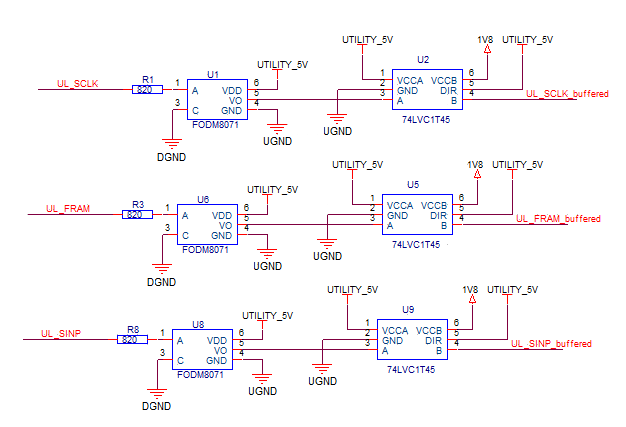
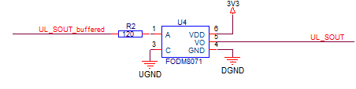

Galvanic separation between utility line serial interface and digital pins
When using the sequencer to control utility lines you need to connect the dedicated serial interface located on the wiring board to three (optionally four) digital channels. The serial interface uses utility ground (UGND) for the return path, digital channels use digital ground (DGND) for their return path. Connecting these two ground domains together may produce ground loops. As a result, level accuracy and noise level could be affected in some cases. Such problems can be avoided by galvanic separation between the serial interface and the digital channels.
- V93000 Pin Scale and Smart Scale systems running SmarTest 7,
- V93000 Smart Scale systems running SmarTest 8,
- V93000 EXA Scale systems running SmarTest 7 and equipped with the optional Utility Card.
- with SmarTest 7 if the control patterns are created by SmartRDI or the Routing Tools of SmartRDI.
On V93000 EXA Scale systems running SmarTest 8 and equipped with the optional Utility Card, the pattern sequencer controls utility lines via an internal data path and does not need galvanic separation.
The serial interface consists of three input pins SCLK (Serial clock), FRAMn (Serial frame enable) and SINP (Serial data in) together with one output pin SOUT (Serial data out). For details of the interface refer to Serial interface for sequencer-controlled utility lines and Specifications for the serial interface.
Example circuit
- The FODM8071 optocoupler inverts the digital control signals SCLK, FRAMn and SINP and also the output of the optional SOUT pin.
- You must therefore invert the digital states in your control patterns. Control patterns that are automatically generated by SmartRDI are not supported.
- The FODM8071 optocoupler requires a minimum of 5 mA input current to switch the output pin to the low level.
- The forward voltage of the FODM8071 optocoupler is maximum 1.8 V at 10 mA.
- In combination with the shown 820 Ω series resistor an input voltage of 6.5 V results in an input current of about 5.4 mA.
- For higher data rates, we recommend reducing the value of the series resistor. However, the maximum forward current of 16 mA of the optocoupler input must be observed.
- This arrangement adds some propagation delay to the signals of the serial interface that have to be included in the timing setup for the SOUT line. Note that variances between the propagation delays of the different lines might lead to a degradation of the maximum data rates.


Software setup for the galvanic separation
- The VIH level of the digital control signals SCLK, FRAMn and SINP must be changed from the recommended value of 1.8 V to a level that ensures that the optocoupler is working properly. The FODM8071 optocoupler requires a minimum of 5 mA input current. With a VIH level of 6.5 V, a current of about 5.4 mA can be achieved.
- The logical states of the digital control signals SCLK, FRAMn and SINP must be inverted.
If you find that you do not need the circuitry and therefore bypass it, make sure that not only the inversion of the signals is reversed but also that the VIH level of the control signals is reduced to the recommended voltage of 1.8 V.
The maximum ratings as defined in the Maximum ratings table of Specifications for the serial interface must not be exceeded.
- Setup for SmarTest 8
SmarTest 8 encapsulates the complete setup for sequencer‑controlled utility lines. For the standard setup, refer to step Dynamically (sequencer‑controlled) controlling utility lines ... in Controlling utility lines.
In order to be able to use the circuit described above and to be able to adapt the characteristics of the generated signals, a protocol block must be defined for the utilityControl element in the DUT board description file.
Within the utilityControl element, define the parameter protocol as SPI and add the following DUT board properties:The following example code shows how to define the utilityControl element for use in combination with the circuit described above:DUT board property Supported value Description Value for the circuit described above interface inverted or nonInverted Selects non‑inverted or inverted control signals. inverted swing 1.8 V ... 6.5 V VIH level of the control signals. > 6.0 V clock 1.0 MHz ... 10.0 MHz The clock frequency.
Needs to be set to lower frequencies if the combination of very long traces on the DUT board or unequal trace lengths and the delay added by the interface circuitry on the DUT board cause unstable data transfer.
dutboard utilityLineDemo { utilityControl { SPI UT1, UT2 { // You must use consecutive utility blocks UT1, UT2,... sinp = 42516; fram = 42503; sclk = 45716; } SPI UT5, UT6 { // You must use consecutive utility blocks UT5, UT6,... sinp = 42517; fram = 42504; sclk = 45717; } protocol SPI { // Can be specified only once interface = inverted; // inverted | nonInverted swing = 6.5 V; // 1.8 V ... 6.5 V clock = 1 MHz; // 1.0 MHz ... 10.0 HMz } } }Hints and rules to be observed:- If a protocol needs to be defined, only one utilityControl block can be used in the DUT board description file.
- The protocol block can be specified only once within the utilityControl block.
- The protocol name for the definition of the pogo pin numbers and the name in the protocol block must be SPI.
- If a protocol is specified, all three DUT board properties interface, swing, and clock are mandatory.
- The default value of the three properties when the protocol block is not defined are nonInverted, 1.8 V, and 5 MHz.
Functional changes
- Introduced in SmarTest 7.4.4
- SmarTest 8.4.4.1: Added software setup for SmarTest 8.